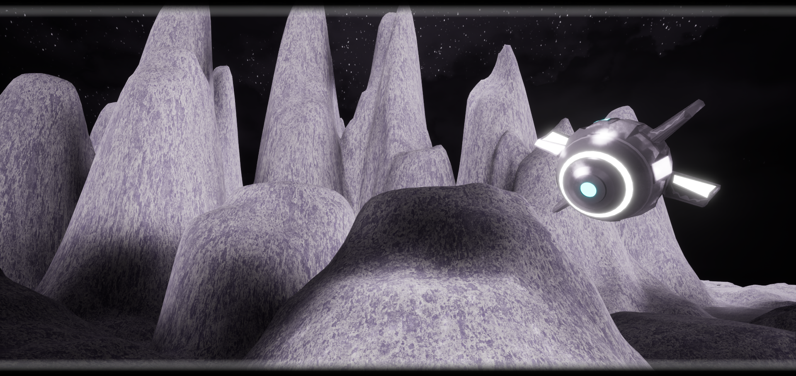

MG-8D7
MG-8D7 is a unique and highly specialized droid in The New Galaxy. Resembling a large and bulky drone, MG-8D7 stands out among its fellow droids with its distinct appearance. Its rounded body is a metallic silver color, with various intricate panels and compartments that house its advanced internal systems.
Despite its size and weight, MG-8D7 is surprisingly nimble and agile, able to maneuver through tight spaces and evade with ease. MG-8D7's innocent-looking appearance can turn in to a nightmare in to seconds. Just because it doesn't look deadly does not mean it is not deadly. In terms of capabilities, MG-8D7 is a best friend's wingman. In any situation, visible or not, MG-8D7 is making all the magic happen with its unmatched capabilities.
Despite its fearsome appearance and deadly prowess in combat, MG-8D7 is not without empathy. It has been known to show compassion towards its fellow droids and allies, often risking its own safety to protect those in need. This sense of loyalty and selflessness sets MG-8D7 apart from other droids, making it a valuable asset in any mission or battle. MG-8D7 is a unique and highly skilled droid that combines brute strength with advanced technology. Its imposing presence and unwavering dedication to its cause make it a force to be reckoned with in The New Galaxy universe.
The rest is mystery. The protagonist is the messenger...